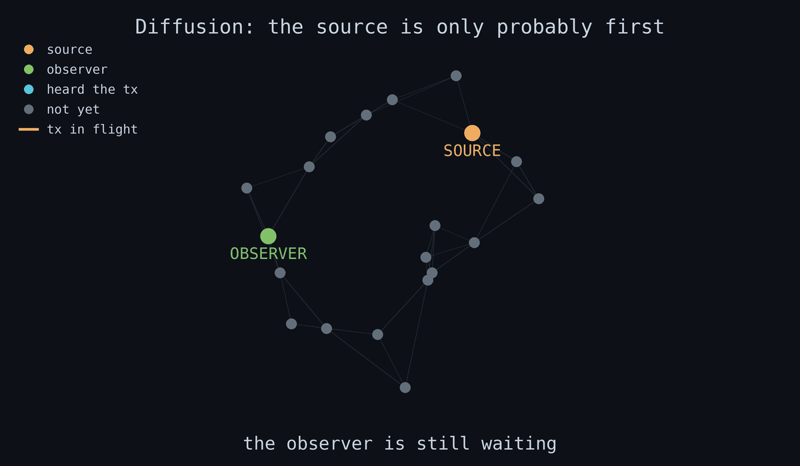
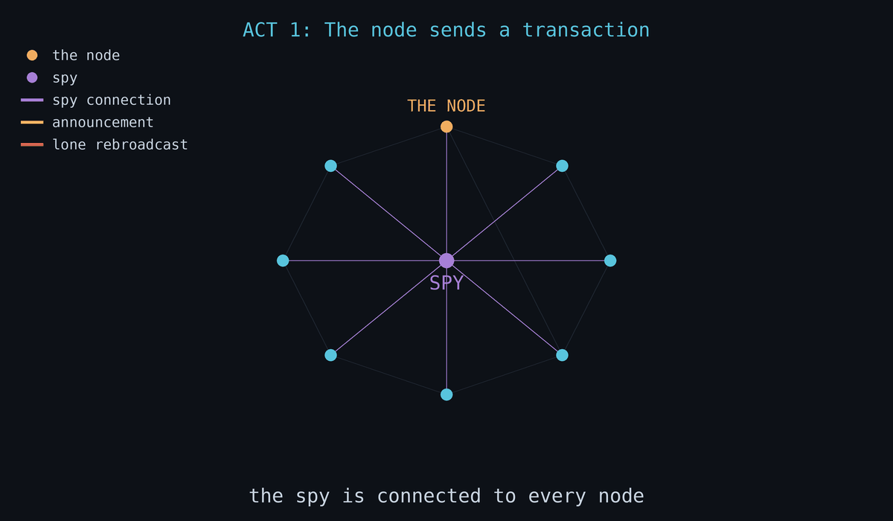
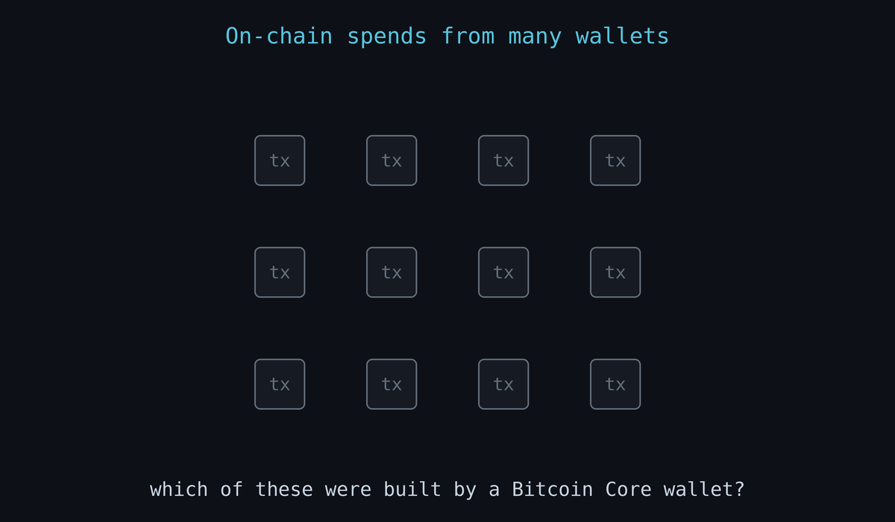
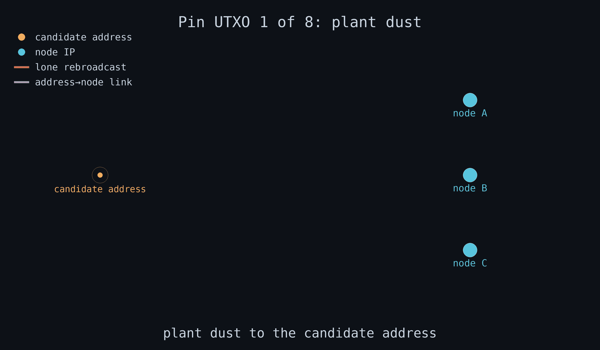
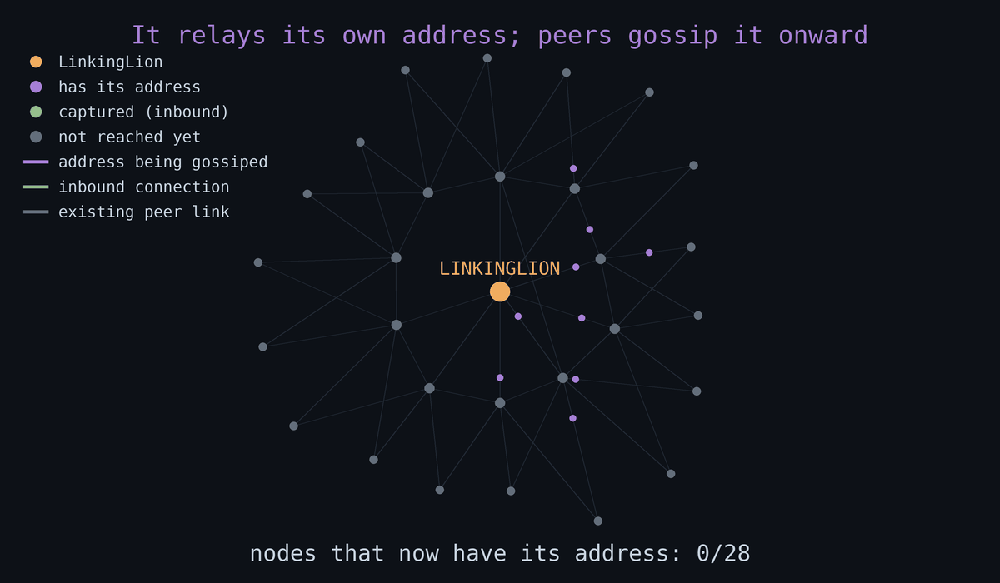
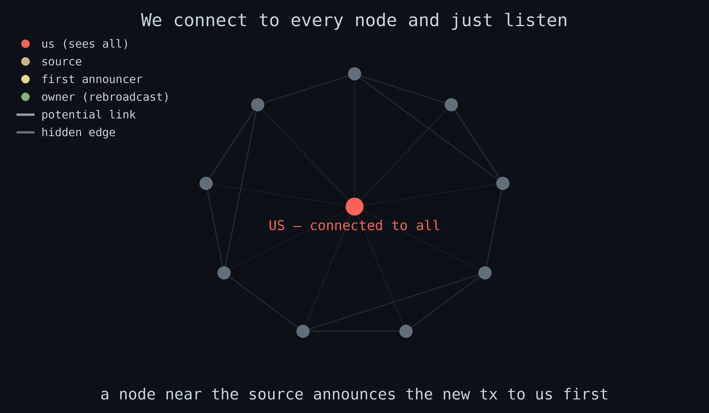

An active, deterministic deanonymization of Bitcoin Core nodes
ismaelsadeeq · delvingbitcoin.org/t/...3123

It does not need:

IsMine checks only that the output script is in the wallet — no key checkInitiateTxBroadcastToAll — no network filter, fires even while the tx is in the mempool100% (30/30)
Stock Dockerized Core nodes · mock-time stepped past the resend window
| output | per-tx | round ×5 | ~USD |
|---|---|---|---|
| P2WPKH | 305 sat | 1,525 | $0.90 |
| P2TR | 342 sat | 1,710 | $1.01 |
| P2PKH | 566 sat | 2,830 | $1.67 |
min relay 0.1 sat/vB · dust 294/330/546 sat


InitiateTxBroadcastToAll has no network filter-onlynet=onion avoids it; dual-stack does not
-privatebroadcast tx that sits 12–36h → the resend falls back to InitiateTxBroadcastToAll and leaks to all peersAffected — anything loading addresses into a Core wallet:
Not affected — own scanning / Electrum / CBF backends:
Mechanism verified in Core's code; the app list is from each project's documented integration — confirm per version.

-walletbroadcast=0 kills the signal — but it disables all wallet broadcasting (even your own sends); relay them yourself via sendrawtransactiondelvingbitcoin.org/t/exploiting-wallet-rebroadcast-...3123 · thanks!